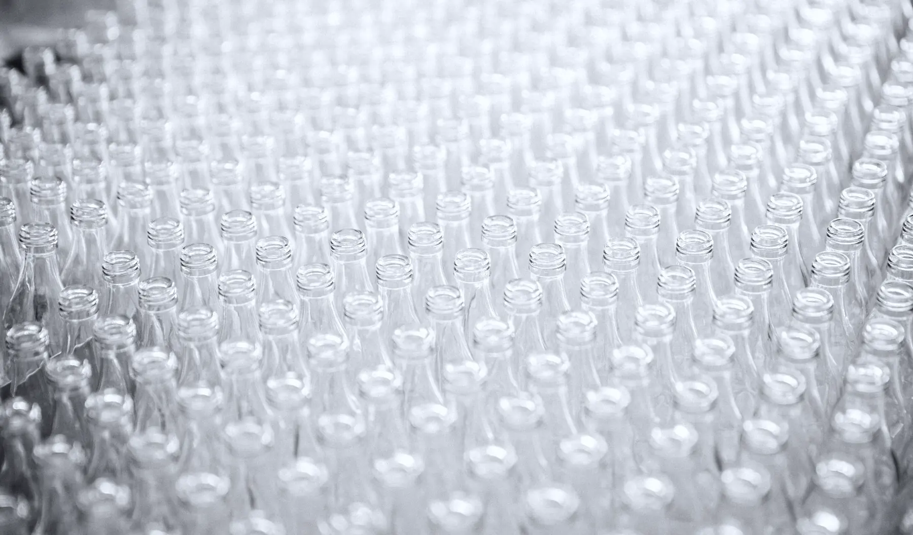

The note — Batch 01
It ends up smelling like what it started as, refined past recognition.
Most perfume is built on alcohol, which lifts a scent off the skin and throws it across a room. Tallow does the opposite. It holds. The result sits about an arm's length from you for nine or ten hours, and people notice it when they are close enough to have been invited.
22% concentration in a tallow–alcohol emulsion. Tested on skin over 31 days in November: median wear 9 h 40 min, shortest 7 h 10 min (wool scarf, open window), longest 12 h 25 min.

Hour by hour — on skin
The first twenty minutes are not the point.
Read the right-hand column as what you will notice. The left is what is actually doing it.
0–20 min · green mandarin, black pepper, a mineral accord
Sharp and short. Citrus peel cut with pepper, over something cold that reads as a slate roof after rain.
20 min–3 h · orris butter, hay absolute, birch tar at 0.2%
It settles. Powder, cut grass drying in a barn, a thread of smoke that never quite becomes smoky.
3 h onward · labdanum, beeswax absolute, tonka
Warm and close. Resin, honeycomb, the inside of a leather glove.
Throughout · clarified tallow, the carrier
Nothing you can name. Skin, slightly warmer than your own.
Materials — where they come from
Nine materials. Named.
- TallowKidney suet, Smithfield, rendered in the arch
- OrrisButter from Florentine iris root, three years dried
- LabdanumAbsolute, Andalusian rockrose
- BeeswaxAbsolute, from a cooperative in Somerset
- MandarinGreen, cold-pressed, Sicily
- PepperBlack, CO₂ extract
- HayAbsolute, Austrian alpine
- Birch tarRectified, at 0.2% — enough to notice, not to name
- TonkaAbsolute, Venezuelan
Acquire
Batch 01 · 1,000 bottles
£185 50 ml eau de parfum · or a 9 ml decant at £42